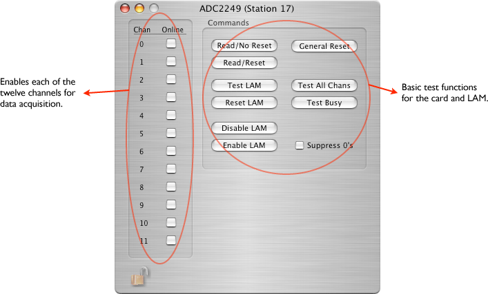

This is a 12-channel charge analog-to-digital converter with 10-bit resolution made by LeCroy.
Catalog Icon:
This card can exist only in a CAMAC crate.

The card will put the short form if at all possible. However, you must be prepared to decode both types.
version 2 (short form)
xxxx xxxx xxxx xxxx xxxx xxxx xxxx xxxx ^^^^ ^^--------------------------------- ADC2249 ID (from header) --------^-^^^--------------------------- Crate number -------------^-^^^^--------------------- Card number -----------------------^---------------- Channel number -------------------------^^^^ ^^^^ ^^^^- adc valueversion 2 (long form)
1xxx xxxx xxxx xxxx xxxx xxxx xxxx xxxx ^^^^ ^^^^ ^^^^ ^^----------------------- AD2249 ID (from header) -----------------^^ ^^^^ ^^^^ ^^^^ ^^^^- length (2 or 4 longs) xxxx xxxx xxxx xxxx xxxx xxxx xxxx xxxx --------^-^^^--------------------------- Crate number -------------^-^^^^--------------------- Card number -----------------------^---------------- Channel number -------------------------^^^^ ^^^^ ^^^^- adc value if length is 4 then a timestamp is added: xxxx xxxx xxxx xxxx xxxx xxxx xxxx xxxx ^^^^ ^^^^ ^^^^ ^^^^ ^^^^ ^^^^ ^^^^ ^^^^- low part of double xxxx xxxx xxxx xxxx xxxx xxxx xxxx xxxx ^^^^ ^^^^ ^^^^ ^^^^ ^^^^ ^^^^ ^^^^ ^^^^- high part of double The time stamp is the number of seconds since Jan 1, 2000.